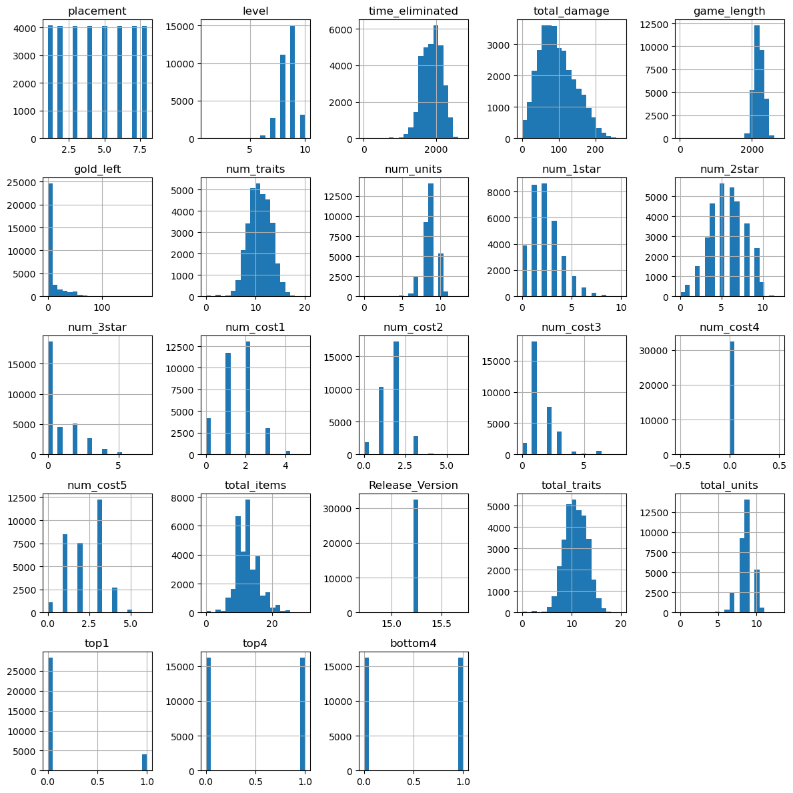
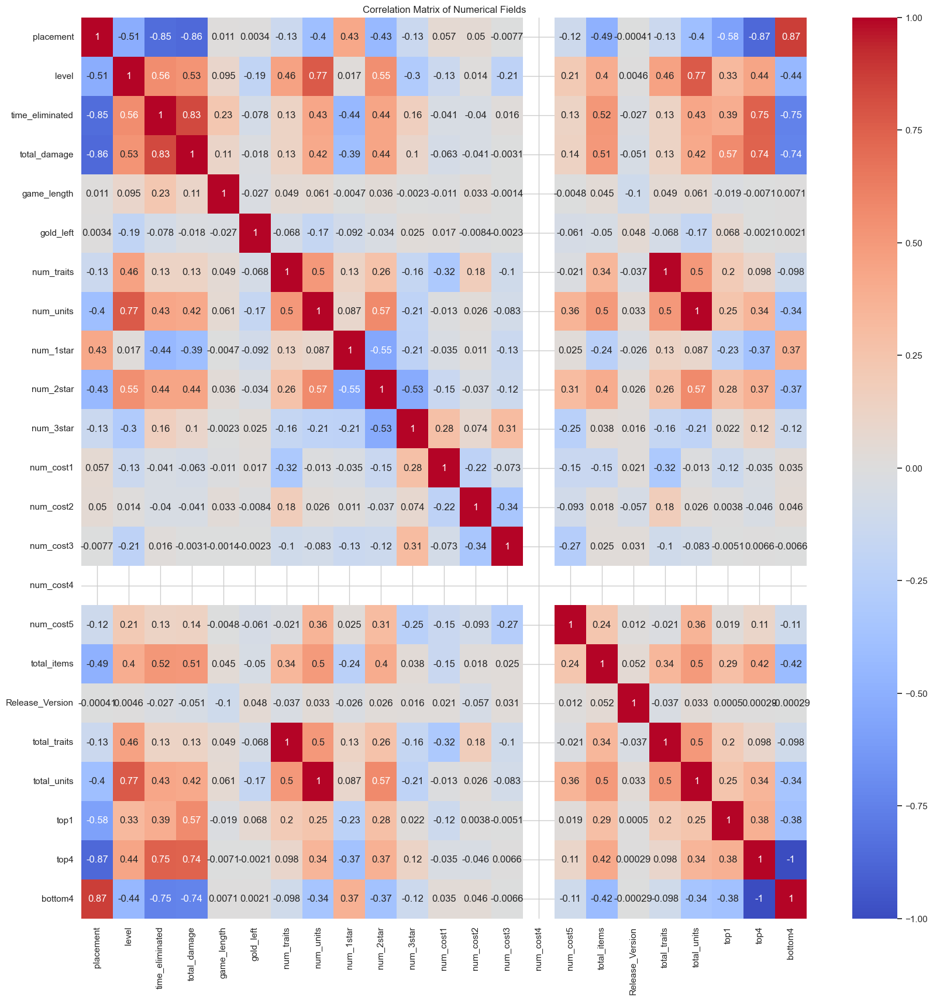
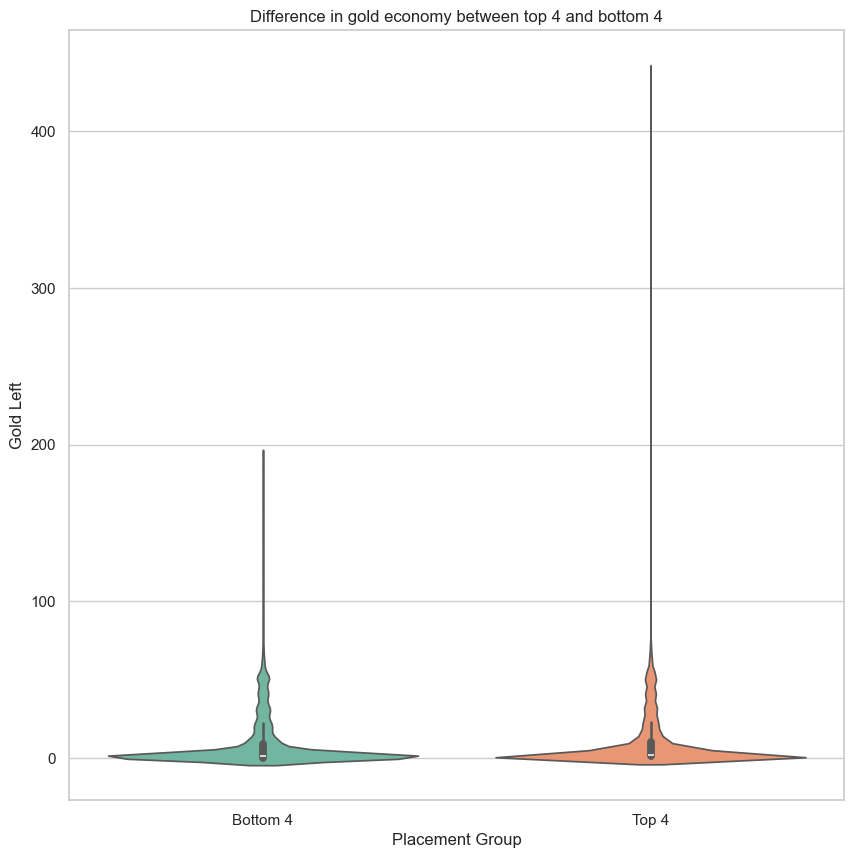

#import packages this file uses
import os
import re
import numpy as np
import pandas as pd
import matplotlib.pyplot as plt
import seaborn as sns
from scipy import statsExploratory Data Analysis
Instructions
Note: You should remove these instructions once you have read and understood them. They should not be included in your final submission.
Remember: Exactly what do you put on this page will be specific you your project and data. Some things might “make more sense” on one page rather than another, depending on your workflow. Organize your project in a logical way that makes the most sense to you.
Suggested page structure
Here’s one suggested structure for organizing your technical pages. You can adjust this as needed:
Audience:Remember that these are written for a technical audience. Assume they have completed the DSAN program, but would appreciate refreshers of the important concepts.
- Introduction and Motivation: Briefly outline your plan. What are you doing on this page, and why? Provide context and explain the goals of your analysis.
- Overview of Methods: Give a concise explanation of the methods used. For example, if using K-Means clustering, describe what it is, how it works, the inputs and outputs, and key hyperparameters.
- Code: Include the code you used to implement your workflow.
- Summary and Interpretation of Results: Summarize your findings, interpret the results, and discuss their technical implications.
What to address
The following is a list of some of the things you should address on this page. This list is not exhaustive, and you should use your judgment to decide what is most relevant to your project.
The EDA (Exploratory Data Analysis) tab in your portfolio serves as a crucial foundation for your project. It provides a thorough overview of the dataset, highlights patterns, identifies potential issues, and prepares the data for further analysis. Follow these instructions to document your EDA effectively:
The goal of EDA is to gain a deeper understanding of the dataset and its relevance to your project’s objectives. It involves summarizing key data characteristics, identifying patterns, anomalies, and preparing for future analysis phases.
Here are suggestions for things to include on this page
Univariate Analysis:
- Numerical Variables:
- Provide summary statistics (mean, median, standard deviation).
- Visualize distributions using histograms or density plots.
- Categorical Variables:
- Present frequency counts and visualize distributions using bar charts or pie charts.
- Key Insights:
- Highlight any notable trends or patterns observed.
Bivariate and Multivariate Analysis:
- Correlation Analysis:
- Analyze relationships between numerical variables using a correlation matrix.
- Visualize with heatmaps or pair plots and discuss any strong correlations.
- Crosstabulations:
- For categorical variables, use crosstabs to explore relationships and visualize them with grouped bar plots.
- Feature Pairings:
- Analyze relationships between key variables, particularly those related to your target.
- Visualize with scatter plots, box plots, or violin plots.
Data Distribution and Normalization:
- Skewness and Kurtosis:
- Analyze and discuss the distribution of variables.
- Apply transformations (e.g., log transformation) if needed for skewed data.
- Normalization:
- Apply normalization or scaling techniques (e.g., min-max scaling, z-score).
- Document and visualize the impact of normalization.
Statistical Insights:
- Conduct basic statistical tests (e.g., T-tests, ANOVA, chi-square) to explore relationships between variables.
- Summarize the statistical results and their implications for your analysis.
Data Visualization and Storytelling:
- Visual Summary:
- Present key insights using charts and visualizations (e.g., Matplotlib, Seaborn, Plotly).
- Ensure all visualizations are well-labeled and easy to interpret.
- Interactive Visualizations (Optional):
- Include interactive elements (e.g., Plotly, Bokeh) to allow users to explore the data further.
Conclusions and Next Steps:
- Summary of EDA Findings:
- Highlight the main takeaways from the EDA process (key trends, patterns, data quality issues).
- Implications for Modeling:
- Discuss how your EDA informs the next steps in your project (e.g., feature selection, data transformations).
- Outline any further data cleaning or preparation required before moving into modeling.
Code
Provide the source code used for this section of the project here.
If you’re using a package for code organization, you can import it at this point. However, make sure that the actual workflow steps—including data processing, analysis, and other key tasks—are conducted and clearly demonstrated on this page. The goal is to show the technical flow of your project, highlighting how the code is executed to achieve your results.
If relevant, link to additional documentation or external references that explain any complex components. This section should give readers a clear view of how the project is implemented from a technical perspective.
Remember, this page is a technical narrative, NOT just a notebook with a collection of code cells, include in-line Prose, to describe what is going on.
Copy/paste instructions: - Introduction and Motivation: Briefly outline your plan. What are you doing on this page, and why? Provide context and explain the goals of your analysis. - Overview of Methods: Give a concise explanation of the methods used. For example, if using K-Means clustering, describe what it is, how it works, the inputs and outputs, and key hyperparameters. - Code: Include the code you used to implement your workflow. - Summary and Interpretation of Results: Summarize your findings, interpret the results, and discuss their technical implications.
What to address
The following is a list of some of the things you should address on this page. This list is not exhaustive, and you should use your judgment to decide what is most relevant to your project.
The EDA (Exploratory Data Analysis) tab in your portfolio serves as a crucial foundation for your project. It provides a thorough overview of the dataset, highlights patterns, identifies potential issues, and prepares the data for further analysis. Follow these instructions to document your EDA effectively:
The goal of EDA is to gain a deeper understanding of the dataset and its relevance to your project’s objectives. It involves summarizing key data characteristics, identifying patterns, anomalies, and preparing for future analysis phases.
Here are suggestions for things to include on this page
Univariate Analysis:
- Numerical Variables:
- Provide summary statistics (mean, median, standard deviation).
- Visualize distributions using histograms or density plots.
- Categorical Variables:
- Present frequency counts and visualize distributions using bar charts or pie charts.
- Key Insights:
- Highlight any notable trends or patterns observed.
Bivariate and Multivariate Analysis:
- Correlation Analysis:
- Analyze relationships between numerical variables using a correlation matrix.
- Visualize with heatmaps or pair plots and discuss any strong correlations.
- Crosstabulations:
- For categorical variables, use crosstabs to explore relationships and visualize them with grouped bar plots.
- Feature Pairings:
- Analyze relationships between key variables, particularly those related to your target.
- Visualize with scatter plots, box plots, or violin plots.
Data Distribution and Normalization:
- Skewness and Kurtosis:
- Analyze and discuss the distribution of variables.
- Apply transformations (e.g., log transformation) if needed for skewed data.
- Normalization:
- Apply normalization or scaling techniques (e.g., min-max scaling, z-score).
- Document and visualize the impact of normalization.
Statistical Insights:
- Conduct basic statistical tests (e.g., T-tests, ANOVA, chi-square) to explore relationships between variables.
- Summarize the statistical results and their implications for your analysis.
Data Visualization and Storytelling:
- Visual Summary:
- Present key insights using charts and visualizations (e.g., Matplotlib, Seaborn, Plotly).
- Ensure all visualizations are well-labeled and easy to interpret.
- Interactive Visualizations (Optional):
- Include interactive elements (e.g., Plotly, Bokeh) to allow users to explore the data further.
Conclusions and Next Steps:
- Summary of EDA Findings:
- Highlight the main takeaways from the EDA process (key trends, patterns, data quality issues).
- Implications for Modeling:
- Discuss how your EDA informs the next steps in your project (e.g., feature selection, data transformations).
- Outline any further data cleaning or preparation required before moving into modeling.
Code
- Introduction and Motivation: The purpose of this notebook is to perform Exploratory Data Analysis (EDA) on the processed TFT gameplay dataset. The various analytics and tests done are done as tests for potential modeling ideas.
- Overview of Methods: Ttest, Chi Square Test,
- Code: Code is shown below
- Summary and Interpretation of Results:
#preset sns style
sns.set(style = "whitegrid")
#Import singlar combined csv file from raw data step as a pandas df
dfTFT = pd.read_csv("../data/processed-data/TFT_processed-data.csv")#get info for high level view
#note, top1, top4, bottom4 are all binarys.
dfTFT.info()<class 'pandas.core.frame.DataFrame'>
RangeIndex: 48692 entries, 0 to 48691
Data columns (total 31 columns):
# Column Non-Null Count Dtype
--- ------ -------------- -----
0 match_id 48692 non-null object
1 puuid 48692 non-null object
2 placement 48692 non-null int64
3 level 48692 non-null int64
4 time_eliminated 48692 non-null float64
5 total_damage 48692 non-null int64
6 game_length 48692 non-null float64
7 game_version 48692 non-null object
8 gold_left 48692 non-null int64
9 traits 48692 non-null object
10 units 48692 non-null object
11 num_traits 48692 non-null int64
12 num_units 48692 non-null int64
13 num_1star 48692 non-null int64
14 num_2star 48692 non-null int64
15 num_3star 48692 non-null int64
16 num_cost1 48692 non-null int64
17 num_cost2 48692 non-null int64
18 num_cost3 48692 non-null int64
19 num_cost4 48692 non-null int64
20 num_cost5 48692 non-null int64
21 total_items 48692 non-null int64
22 Release_Version 48692 non-null float64
23 total_traits 48692 non-null int64
24 total_units 48692 non-null int64
25 top1 48692 non-null int64
26 top4 48692 non-null int64
27 bottom4 48692 non-null int64
28 champions 48692 non-null object
29 raw_champions 48692 non-null object
30 champion_list 48692 non-null object
dtypes: float64(3), int64(20), object(8)
memory usage: 11.5+ MB#get data types
dfTFT.dtypesmatch_id object
puuid object
placement int64
level int64
time_eliminated float64
total_damage int64
game_length float64
game_version object
gold_left int64
traits object
units object
num_traits int64
num_units int64
num_1star int64
num_2star int64
num_3star int64
num_cost1 int64
num_cost2 int64
num_cost3 int64
num_cost4 int64
num_cost5 int64
total_items int64
Release_Version float64
total_traits int64
total_units int64
top1 int64
top4 int64
bottom4 int64
champions object
raw_champions object
champion_list object
dtype: object#Get decriptive stats of int and float fields
dfTFT.describe(include=['int64','float64']).T| count | mean | std | min | 25% | 50% | 75% | max | |
|---|---|---|---|---|---|---|---|---|
| placement | 48692.0 | 4.496878 | 2.292528 | 1.000000 | 2.000000 | 4.000000 | 6.000000 | 8.000000 |
| level | 48692.0 | 8.558778 | 0.862634 | 1.000000 | 8.000000 | 9.000000 | 9.000000 | 10.000000 |
| time_eliminated | 48692.0 | 1880.757748 | 276.654606 | 7.777373 | 1677.486755 | 1898.756653 | 2084.115784 | 3036.849609 |
| total_damage | 48692.0 | 95.138791 | 48.520575 | 0.000000 | 58.000000 | 89.000000 | 128.000000 | 283.000000 |
| game_length | 48692.0 | 2183.635953 | 145.616022 | 7.777373 | 2089.311951 | 2181.404297 | 2278.620728 | 3048.027588 |
| gold_left | 48692.0 | 8.981106 | 16.462428 | 0.000000 | 0.000000 | 1.000000 | 9.000000 | 438.000000 |
| num_traits | 48692.0 | 10.388524 | 2.304766 | 0.000000 | 9.000000 | 10.000000 | 12.000000 | 20.000000 |
| num_units | 48692.0 | 8.735562 | 1.101782 | 0.000000 | 8.000000 | 9.000000 | 9.000000 | 15.000000 |
| num_1star | 48692.0 | 2.153927 | 1.548536 | 0.000000 | 1.000000 | 2.000000 | 3.000000 | 11.000000 |
| num_2star | 48692.0 | 5.679783 | 2.142436 | 0.000000 | 4.000000 | 6.000000 | 7.000000 | 14.000000 |
| num_3star | 48692.0 | 0.895609 | 1.236078 | 0.000000 | 0.000000 | 0.000000 | 2.000000 | 7.000000 |
| num_cost1 | 48692.0 | 1.517333 | 0.884354 | 0.000000 | 1.000000 | 2.000000 | 2.000000 | 7.000000 |
| num_cost2 | 48692.0 | 1.661854 | 0.736219 | 0.000000 | 1.000000 | 2.000000 | 2.000000 | 6.000000 |
| num_cost3 | 48692.0 | 1.540992 | 0.999386 | 0.000000 | 1.000000 | 1.000000 | 2.000000 | 8.000000 |
| num_cost4 | 48692.0 | 0.000000 | 0.000000 | 0.000000 | 0.000000 | 0.000000 | 0.000000 | 0.000000 |
| num_cost5 | 48692.0 | 2.250801 | 1.068626 | 0.000000 | 1.000000 | 2.000000 | 3.000000 | 7.000000 |
| total_items | 48692.0 | 12.569169 | 3.783431 | 0.000000 | 10.000000 | 12.000000 | 15.000000 | 36.000000 |
| Release_Version | 48692.0 | 15.220215 | 0.005771 | 15.210000 | 15.220000 | 15.220000 | 15.220000 | 15.230000 |
| total_traits | 48692.0 | 10.388524 | 2.304766 | 0.000000 | 9.000000 | 10.000000 | 12.000000 | 20.000000 |
| total_units | 48692.0 | 8.735562 | 1.101782 | 0.000000 | 8.000000 | 9.000000 | 9.000000 | 15.000000 |
| top1 | 48692.0 | 0.125709 | 0.331524 | 0.000000 | 0.000000 | 0.000000 | 0.000000 | 1.000000 |
| top4 | 48692.0 | 0.500472 | 0.500005 | 0.000000 | 0.000000 | 1.000000 | 1.000000 | 1.000000 |
| bottom4 | 48692.0 | 0.499528 | 0.500005 | 0.000000 | 0.000000 | 0.000000 | 1.000000 | 1.000000 |
#Create Histograms of all int and float fields
num_cols = dfTFT.select_dtypes(include=['int64','float64']).columns
dfTFT[num_cols].hist(bins = 20, figsize = (12,12))
plt.tight_layout()
plt.show()
Data Distribution
#Histogram visually shows skew among a couple of fields
#Lets determine the skew of num cols
dfTFT[num_cols].skew().sort_values()game_length -1.623388
total_units -1.142394
num_units -1.142394
level -0.760068
time_eliminated -0.476707
num_2star -0.110126
total_traits -0.103944
num_traits -0.103944
num_cost2 -0.091507
num_cost5 -0.010236
top4 -0.001889
num_cost4 0.000000
Release_Version 0.000059
placement 0.001034
bottom4 0.001889
num_cost1 0.192532
total_damage 0.439728
total_items 0.658633
num_1star 0.858205
num_3star 1.314868
num_cost3 1.721612
top1 2.258098
gold_left 3.439884
dtype: float64#Look at Kurtosis
dfTFT[num_cols].kurt().sort_values()bottom4 -2.000079
top4 -2.000079
placement -1.238927
num_cost5 -0.581077
num_2star -0.470681
total_damage -0.400378
Release_Version -0.001055
num_cost4 0.000000
num_cost1 0.123231
num_traits 0.327377
total_traits 0.327377
num_cost2 0.445530
num_1star 0.787790
num_3star 1.049547
time_eliminated 1.082479
total_items 1.672486
level 2.460540
top1 3.099134
num_cost3 4.738643
num_units 6.883389
total_units 6.883389
game_length 23.007420
gold_left 24.175919
dtype: float64#Highest skew and kurt is gold_left.
#Bottom4 having highest negative Kurtosis is odd. The data should be evenly split between 0 and 1.#make corr matrix of num fields
plt.figure(figsize=(20,20))
sns.heatmap(dfTFT[num_cols].corr(),annot = True, cmap = 'coolwarm')
plt.title("Correlation Matrix of Numerical Fields")
plt.show()
#look at pairwise relationships
sns.pairplot(dfTFT[['placement', 'level', 'total_damage', 'game_length']])
plt.show()
#create ttest assesing the siginfignace of gold left on placerplacement
win = dfTFT[dfTFT["top1"] == 1]["gold_left"]
lose = dfTFT[dfTFT["top1"] != 1]["gold_left"]
stats.ttest_ind(win, lose, equal_var = False)TtestResult(statistic=13.884042157836218, pvalue=2.6679327293662187e-43, df=7596.385463513003)#TTest indicates high statistical siginifgance.
#Lets use a violin plot top compare top and bottom cut players
dfTFT["finish_group"] = dfTFT["placement"].apply(lambda x: "Top 4" if x <= 4 else "Bottom 4")
dfTFT["finish_group"].value_counts()
plt.figure(figsize = (10,10))
sns.violinplot(data = dfTFT, x = "finish_group", y = "gold_left" , palette = "Set2")
plt.title("Difference in gold economy between top 4 and bottom 4", fontsize = 12)
plt.xlabel("Placement Group", fontsize = 12)
plt.ylabel("Gold Left", fontsize = 12)
plt.tight_layout
plt.show()/var/folders/6s/cxp6j6zd22s3tgzn53pm65900000gn/T/ipykernel_10519/3703048918.py:7: FutureWarning:
Passing `palette` without assigning `hue` is deprecated and will be removed in v0.14.0. Assign the `x` variable to `hue` and set `legend=False` for the same effect.
sns.violinplot(data = dfTFT, x = "finish_group", y = "gold_left" , palette = "Set2")